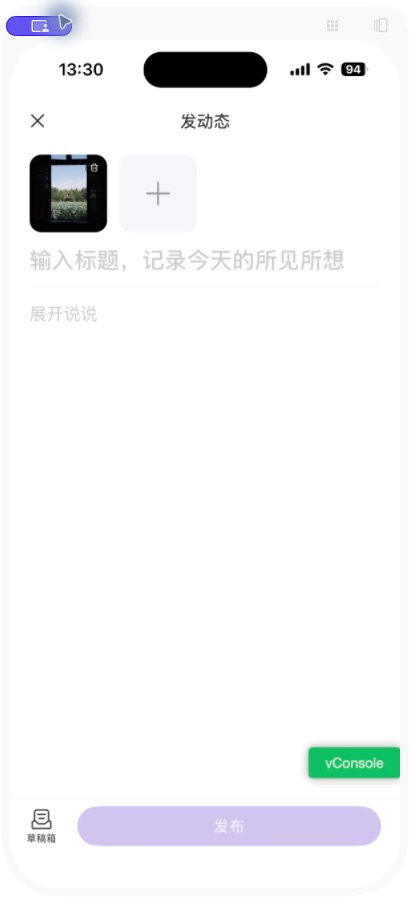
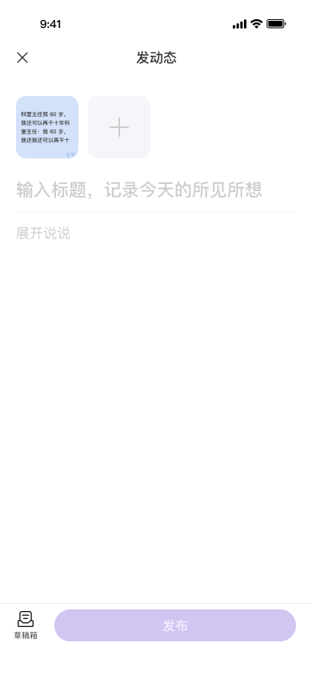
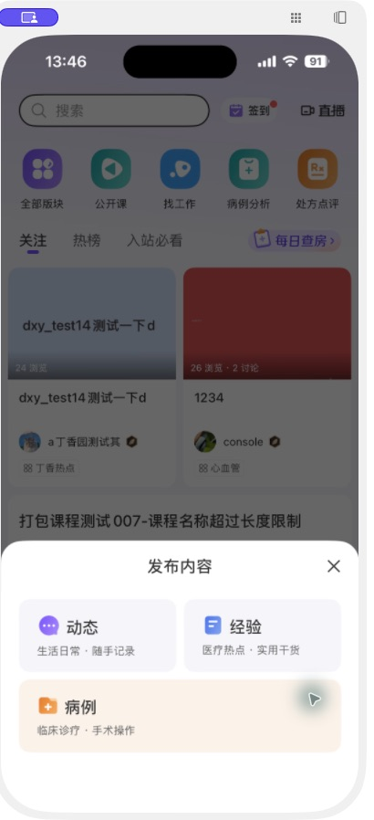
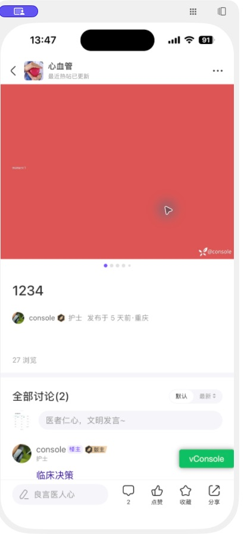
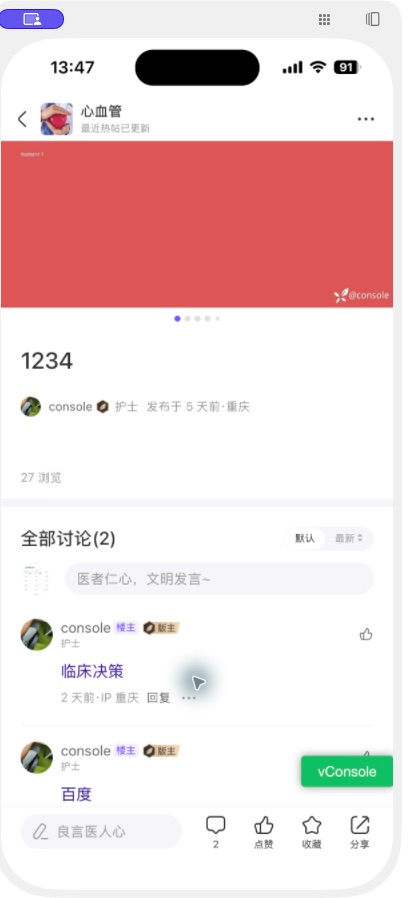

查看社区 iOS 问题列表 · 查看本次验收批次。首页卡片检查记录已归入同一批次，缺失状态明确待复核；尚未完成全范围验收。本页保留为补充证据档案，正式网站尚未发布本批次。
首页卡片 · 专项补充验收
已补查五类本次改动相关卡片：双列图文、双列视频、横向有图帖、横向无图帖、同行推荐。
完成结构检查、设计参数与截图细查、回看复核；当前样本未新增确定样式缺陷。课程卡片作为直接相邻区域旁查。未出现的类型和状态继续保留待复核。
此前仅检查首页首屏结构，未完成卡片验收；本节为本次补充，不将之前的首页浏览追记为完整通过。
| 类型与设计依据 | 逐项核对 | 实际结果及限制 |
|---|---|---|
| 双列图文 0:2783 | 卡片 183×240、封面 183×122、外圆角 12；标题 14／20、两行区域；作者头像 24，信息 12／16；标签 11／16。图片下 gap 8，文字左右内边距 12。 | 查看一行／两行标题、图片／文字海报、多位作者。截图卡片约 184×240、封面约 184×122；两行标题预留、作者行及标签关系与设计接近，未见溢出或错位。 |
| 双列视频 0:2883 | 复用双列卡片尺寸；核对封面比例、居中播放图标、底部渐变数据区、标题到作者的间距、版块标签。 | 取得河流、火焰、车轮等多条视频样本；播放图标位于封面中央，数据在底部，作者和标签未被挤压。点赞／讨论为 0 的缺省展示未误计为缺陷。 |
| 横向有图帖 0:2951 | 标题 → 作者 → 摘要／图片 → 标签 → 互动数据／更多；卡片 374×191、内边距上下 16／左右 12；标题 17／24；头像 24；右图 96×64、圆角 8。 | 取得两条有图帖。实际约 376×191，缩略图约 96×64；图与作者区顶部对齐、摘要两行截断／全文、标签与数据分层均未见明确偏差。没有投票或评论块残留。 |
| 横向无图帖 0:3872 | 正文占满内容宽 350；核对长标题换行、用户名／身份排布、摘要、版块标签、浏览／点赞／讨论行、右下更多入口。 | 查看一行／两行标题、长用户名、短摘要和两行摘要。无图时没有空白缩略图占位；内容行数变化会改变卡片高度，未按固定 191 高误报。长用户名未越过卡片边界。 |
| 同行推荐 0:2996 | 183×240；标题 18／25；子卡片 167×60、上下间距 8、圆角 8；头像 36，名称 14／20，身份 10／14；更多和关注图标。 | 实际约 184×240，子卡约 168×60。双色标题、更多、两个用户子卡、加号和身份信息层级未见明确偏差；只核对未关注状态，未点击关注。 |
| 课程卡片 设计备注“没改” | 作为相邻区域检查标题、官方身份、摘要、内嵌课程、学习人数、推荐标识与卡片边界。 | 多条课程样本未见新增遮挡或越界；不将未改课程样式算作本次新增功能完整验收。 |
以上设计数值为 Figma 坐标单位，实际数值是镜像截图估测，不是 iOS pt。两侧按卡片可见宽度归一化对照；不能据截图宣称源码字号、字重或精确颜色已验证。
双列图文 · 实际与设计


双列视频 · 实际与设计


横向有图帖子 · 实际与设计


横向无图帖子 · 实际与设计


同行推荐 · 实际与设计

本次补查轮次、原尺寸截图与未覆盖项
- 结构检查：沿关注信息流向下采集 14 段卡片视图，并额外取得多条视频样本；建立五类相关卡片与课程旁查映射。新增确定问题 0。
- 设计参数／截图细查：读取双列、横向有图／无图、同行推荐节点与当前设计备注；核对字体层级、行高关系、背景、尺寸、内边距、对齐、圆角、标签和数据区。新增确定问题 0。
- 回看复核：重新滚动回查双列图文／视频、横向有图／无图、同行推荐和课程；保留复核截图。新增确定问题 0，仅对已取得样本给出结论。
双列图文复核 · 双列视频复核 · 有图帖子复核 · 无图及两行标题复核 · 同行推荐复核 · 课程旁查


仍待复核：横向视频帖、关注版块推荐、学术广告卡片；多标签同时存在时的优先级组合、已关注按钮状态。当前样本未取得这些状态，不宣称首页全部通过。跟学练／值班必备／直播在备注中标为未改，不扩展为本轮完整验收。

已复现 · 文字模式占位文字小于设计
局部样式 / P2 / DXY-001（统一预览已登记）。路径：发布内容 → 动态 → 文字 → 卡片内「说说此刻的想法...」。卡片宽度基本一致，但实际文字更小、更短，重新进入后仍然复现。
| 设计依据 | Frame 0:3144，文本 I0:3149;91950:77054：PingFang SC Medium、字号 30、160% 行高（48 个设计坐标单位）、字距 0；卡片宽 350。 |
|---|---|
| 截图测量 | 两次默认态的灰色字形包围盒均为 218×26 截图像素，设计为 232×27 像素。实际卡片约 352 像素宽、设计为 350 像素；相对卡片宽度，实际整句文字约短 7%。这是图像测量，不能等同于 iOS pt 或源码字号。 |
| 修改建议 | iOS 开发核对该占位文本的字体尺寸、字体和缩放设置，按设计 30／48 的相对视觉尺寸调整，并在同一设备条件下复拍默认态与聚焦态。实际字号与根因尚未确认。 |


测量方法：灰色字形像素包围盒，抗锯齿阈值灰度 80–205。仅用于判断可见尺寸偏差，不推定实际字号、字重或行高。
已核对范围与证据条件
| 设计基准 | 新增动态内容 · Page 1。已读取首页、发布面板、文字模式、动态编辑、相册、图片预览与动态详情的设计节点和参数。 |
|---|---|
| 实际界面 | 关注首页首屏、发布内容面板、单图动态编辑、标题聚焦、图片预览、退出提示；文字默认态两次重新进入、聚焦态两次；两条现有动态详情的首屏、讨论区及大图预览。只读查看，未进行点赞、评论或发布。 |
| 截图尺寸 | 原镜像截图 318×701；放大后为 410×898。报告主要证据为 410×898，包含镜像窗口边框／工具栏，部分截图内容横向位移；不是手机原始分辨率，不直接换算 iOS pt。设计图宽 390。 |
| 未知信息 | App 版本／构建号、iPhone 型号、iOS 版本、原始设备尺寸、DPR、显示／字体缩放未知，尚未验证目标发布版本。vConsole 暂记环境差异；镜像未弹出软件键盘不判为 App 缺陷。 |
| 尚未覆盖 | 长正文首／中／尾、长文本生成后的卡片、单图隐藏分页点、不同图片数量的切换状态、相册选中态、选择版块及上传／审核状态。横向滚动未能验证切图，不据此判定功能异常。相册私人图片不收录报告。 |
| 项目数据 | 仅社区 iOS，其他端本次未覆盖。候选补录后预览 revision 46，社区共2条问题、2个批次（含1条候选待复核）；正式接口核查 revision 43，社区仍无问题或批次。本次仅写入预览，不使用 ClinPaper 的 CP 编号。 |
待复核候选 · 缩略图与标题之间的留白偏紧
路径：发动态 → 图片区下方 → 标题输入占位。实际截图中，缩略图下方到标题的空白小于设计，标题与下方分隔线整体更靠近图片区。
设计依据：0:3271 中图片容器下内边距为 12、相邻标题 gap 为 12，合计 24 个设计坐标单位；图片 78×78，标题 22／31。实际间距目前仅为镜像截图观测，尚未完成统一尺度测量和重新进入复现，不给出伪精确的 iOS pt 值。
该条尚未确认为缺陷，已补录为 DXY-002 · 候选待复核，由你判断是否忽略。图中绿色 vConsole 另记环境差异，未混入缺陷数。




发布内容面板 · 复核对照
动态／经验双列、病例整行。已对照面板结构、文字层级、色块、卡片尺寸、边距与圆角；三次查看中未发现明确的新增可见偏差。背景数据不同，此处仅对照面板。



动态详情 · 已取得的运行证据
检查图片容器、分页点、标题、作者信息、讨论区与底部工具栏，查看两条现有动态和大图预览。现有测试内容没有长正文，不宣称正文样式已通过；登录、数据及内容差异不记为样式错误。






真实检查记录 · 不代表全范围收敛
- 结构检查：建立首页、发布面板、文字、编辑、相册入口、预览和详情映射。图片到标题的留白记为候选。
- 参数与截图细查：读取卡片、字体、图片及间距参数；新增 1 项文字可见尺寸偏差。两次进入的字形宽均为 218 截图像素，设计 232 像素。
- 可访问范围复核：回查文字聚焦态、首页首屏、发布面板、动态详情首屏与讨论区，未发现新的明确可见偏差。图片编辑候选未重新进入复现，上表状态仍缺证据，因此全范围验收未完成。